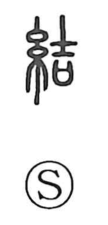

結

Uncategorized
Kun: musubu, yuu, yuwaeru | On: ketsu
to tie ・ to bind ・ to connect ・ to conclude ・ to promise ・ to strengthen
Explanation
結 is a phono-semantic character: the thread element points to cords and tying, while 吉 acts as the phonetic and evokes the idea of sealing—originally the head of a small adze set upon a sacred covenant vessel that held written prayers, closing them in to preserve their power. From this core sense of closing and containing, musubu came to mean the gathering and concentrating of vital force. In ancient Japan, people performed binding rites, knotting pine twigs or plants to ‘bind in’ the soul’s wish for safety and great happiness; tying cords could also affirm affection and serve as a pledge. Hence the character’s range of meanings: to tie and connect, to make a promise, and to consolidate or strengthen.